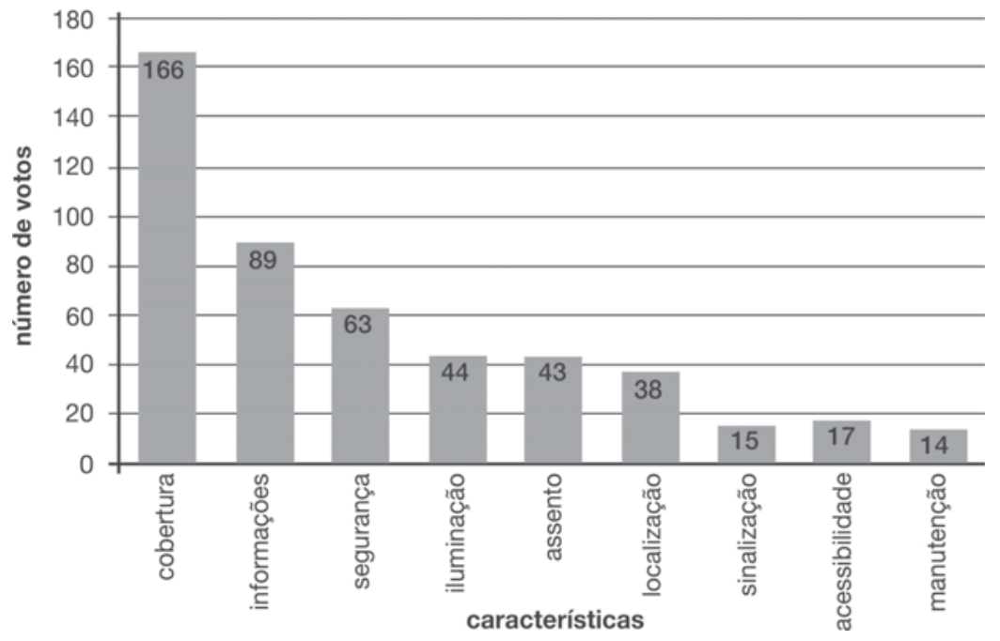
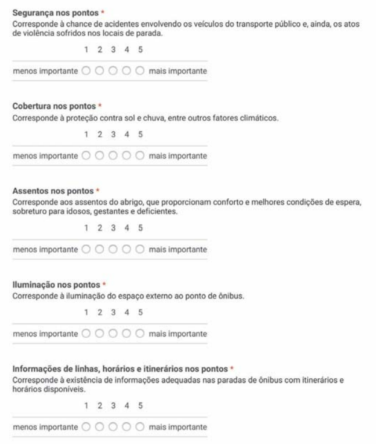

5. Referêncial Teórico
5.1 Estudo sobre as condições das paradas de ônibus na cidade de São Paulo
Com a chegada de cada vez mais pessoas aos grandes centros urbanos, a procura por transportes coletivos é crescente. A primeira possibilidade que surge na mente das pessoas são os ônibus, mas mesmo com a demanda exorbitante de tal meio de transporte, aqueles que dependem dos ônibus se sentem insatisfeitos com o estado do serviço que lhes é prestado.
Para tentar compreender quais as mudanças necessárias para a melhoria dos serviços de transporte coletivo, foi realizado um levantamento bibliográfico e de normas para a elaboração do ponto de ônibus ideal. Para isso, foi utilizada a pesquisa de ALEX WESLEY DA SILVA DE BRITO et al (2018), que realizou um estudo de campo para a análise dos pontos existentes em cinco regiões da cidade de São Paulo.
Reunindo as opiniões das pessoas sobre o que constitui um ponto de ônibus ideal, ALEX WESLEY DA SILVA DE BRITO et al (2018) percebeu que os principais aspectos levantados pelos usuários foram a acessibilidade para deficientes, idosos e outros grupos, uma localização estratégica, próximo a locais com grande circulação de pessoas, como regiões industriais e de comércio, e longe de locais com muitas curvas, visando evitar acidentes entre veículos, iluminação, proteção contra sol, chuva e outros eventos meteorológicos, mais assentos, lixeiras, um painel digital com informações sobre as linhas de ônibus, sinalização para cadeirantes e piso tátil.
Um questionário estipulado pelos autores foi realizado com os usuários do transporte público, dividindo-os em cinco zonas da cidade de São Paulo, leste, centro, sul, norte e oeste, onde eles poderiam das notas para cada item que haviam encontrado em experiências anteriores, tais itens sendo acessibilidade, bancos, cobertura iluminação, lixeiras, painéis informativos, sinalização horizontal e vertical, sinalização de ponto de ônibus e sinalização no piso. Ao final do questionário, todas as respostas foram dispostas em um gráfico somatório das 5 regiões da cidade de São Paulo pesquisadas.
Na imagem dos resultados do questionário, as características medidas eram cobertura, bancos, painéis informativos, placas verticais e marcas no pavimento, lixeiras, iluminação, acessibilidade, sinalização no piso e sinalização dos pontos de ônibus.
Figura 1 - Gráficos do Somatório Global

Fonte: Alex Wesley da Silva da Brito, 2017
Com a somatória global da pesquisa, é perceptível que a maior insatisfação por parte dos usuários com os pontos de ônibus na cidade de São Paulo, era a questão da iluminação. A realização também apresenta uma proposta para mudança, já que com a coleta de dados, é possível perceber em quais pontos é necessário melhorar, e também encontrar padrões no planejamento desses pontos de ônibus.
5.2 Problemas relacionados aos pontos de parada do transporte público nas cidades de porte médio
Com a evolução constante das cidades, é esperado que os serviços prestados aos habitantes acompanhem as mudanças. É necessário que haja mudanças para atender às exigências da população.
“[...] demandando também um sistema de transporte compatível com às exigências do processo produtivo. Esse processo de produção induz a localização de bens e serviços do espaço urbano, sendo necessário uma estruturação viária para atender todos os pontos da cidade. Percebe-se então, que os transportes urbanos estão totalmente ligados às relações sócioeconômicas, produzindo o espaço urbano.” (KAROLINE ROSALEN ADRADE et al, 2004).O planejamento dos transportes públicos vem sofrendo múltiplas críticas, comumente relacionadas aos aspectos operacionais e conceituais. Problemas técnicos e pouca atenção às necessidades da comunidade. Precisa ser analisado os aspectos sociais, urbanos e espaço-físico, com essa análise pode-se direcionar para o planejamento dos transportes. Para o planejamento dos transportes deve ser levado em consideração os elementos do espaço.
“[...] deixar de relacioná-los às características socioeconômicas, locais produtores de viagens (supermercados, parques, escolas, universidades, hospitais, indústrias etc.), densidade demográfica, motivações das viagens (esporádicas ou constantes), reservas naturais e características físicas, como topografia, barreiras físicas e planos urbanísticos, propondo assim a implantação de um sistema de transporte mais racional.” (KAROLINE ROSALEN ADRADE et al, 2004).A experiência que o usuário tem enquanto se utiliza dos pontos de ônibus é essencial, já que é o seu primeiro contato com o sistema de transportes. Os pontos de parada influenciam diretamente no tempo do percurso, na velocidade média e nos custos de operação. Para o passageiro, a localização do ponto de parada é determinante pois influencia na condição de acessibilidade e na variável de tempo médio de caminhada.
Há alguns critérios que devem ser seguidos durante a implementação de um novo ponto de ônibus, porém, esses mesmos critérios mudam de acordo com a região em que a parada de ônibus será construída, o distanciamento entre uma parada e outra é um exemplo, em áreas centrais a distância é de 300 a 400 metros, em áreas intermediárias 400 a 600 metros e em áreas periféricas 600 a 800 metros. O cumprimento ou não desses critérios podem afetar diretamente a velocidade do percurso feito pelo ônibus, bem como o custo de operação. A negligência que há na construção de na manutenção dos pontos de ônibus faz com que aqueles que dependem do transporte público sintam-se cada vez mais insatisfeito e os preços cada vez mais altos.
5.3 Proposição de um método para avaliação de qualidade dos pontos de parada do transporte coletivo urbano por ônibus sob a ótica do usuário
A utilização do transporte público é divido, segundo Ferraz e Torres (2004), em etapas:
“[...] locomoção ao ponto de embarque, espera pelo veículo no ponto, permanência no interior do veículo e condições de viagem, chegada ao ponto de desembarque e locomoção do ponto ao destino final.”Dois macros fatores são fundamentais, sendo eles comodidade e segurança. Alguns requisitos precisam ser atendidos para que a qualidade do transporte seja mantida, algumas delas sendo: sinalização adequada nos locais visando otimização de tempo e a segurança da parada do veículo; calçadas largas para permitir uma espera segura dos usuários; existência ou não de cobertura para proteção contra a chuva e a irradiação solar; bancos para sentar-se que, além de comodidade, dão condições necessárias de espera a idosos, deficientes, gestantes etc.; e, por fim, informação aos usuários.
Há 10 indicadores de qualidade no sistema de transporte coletivo por ônibus para os usuários no que diz respeito ao local de parada:
- Sinalização da identificação do ponto precisa ser adequada, evitando-se o problema de placas deterioradas por vândalos ou panfletos colados com o objetivo de que novos usuários não se sintam perdidos;
- Uma boa estrutura de cobertura para proteger os usuários da chuva, de raios solares e outros fenômenos meteorológicos enquanto aguardam;
- Bancos de qualidade para que os usuários, principalmente idosos, deficientes físicos, entre outros grupos, visando o conforto daqueles que utilizam o transporte;
- Manter um ponto de ônibus em boa aparência é importante, já que está ligado diretamente à experiência do usuário;
- Um ponto de ônibus limpo, garantindo o bem-estar do usuário, evitando a propagação de doenças e mantendo uma boa aparência;
- Obras e manutenções periódicas, toda a infraestrutura que envolve o ponto de ônibus está sujeito à erosão, portanto manter o local bem cuidado é importante para que sua qualidade não seja comprometida;
- O usuário deve se sentir seguro no ponto de parada enquanto espera a chegada do veículo, esse quesito envolve acidentes com outros veículos próximos à parada, bem como atos de violência nas proximidades;
- Disponibilizar aos usuários, em forma de tabelas ou panfletos, informações com os horários das linhas que passam por determinado ponto de parada e a indicação do itinerário;
- A localização do ponto de ônibus também é importante, é avaliada a localidade do ponto exija que os usuários, em certos horários do dia, precisem atravessar vias em horários com alto fluxo de automóveis, comprometendo sua segurança (não havendo passarelas ou demais alternativas);
- Acessibilidade ao chegar no local de embarque e ao sair do mesmo, à implantação de larguras efetivas (permitindo a passagem de cadeirantes) bem como à presença de faixa de pedestre nas proximidades.
Esses indicadores, porém, podem variar de pessoa para pessoa, dependendo da sua idade, seu sexo, cultura e/ou tradição. Mesmo com toda essa complexidade inerente ao assunto, é necessário encontrar padrões de qualidade para efeito de planejamento, projeto e avaliação dos sistemas de transporte público.
Questionários foram realizados com os usuários para tentar entender quais eram suas necessidades e desejos para pontos de parada de ônibus melhores. No questionário 1 (de caráter qualitativo), com 345 respostas obtidas, os usuários poderiam dar notas de 1 a 5 para as características que eles consideravam que mais necessitava de mudanças, 1 sendo de menor importância e 5 sendo de maior importância, essas características sendo cobertura, informações, segurança, iluminação, assentos, localização, sinalização, acessibilidade e manutenção.
Figura 2 - Gráficos do Resultados do Questionário 1
Fonte: Marcelo Henrique Benites Ciani de Carvalho Oliveira, 2015
Pelos resultados obtidos neste questionário, é perceptível que a característica que os usuários consideravam mais importante em um ponto de ônibus de qualidade era a cobertura. No questionário 2 (de caráter quantitativo), com 248 respostas, foram selecionadas as 5 características mais votadas no questionário 1 desta vez tendo que atribuir grau de importância de 1 a 5 a cada uma delas, 1 sendo de menor importância e 5 sendo de maior importância.
Figura 3 - Gráficos do Questionário 2
Fonte: Marcelo Henrique Benites Ciani de Carvalho Oliveira, 2015
Com a aplicação de ambos os questionários, foi concluído que, no município onde a pesquisa foi realizada, Bauru, São Paulo, as características que mais deixavam a desejar, na opinião dos usuários, eram a qualidade dos bancos, lixeiras, informativos sobre as linhas de ônibus e outros.